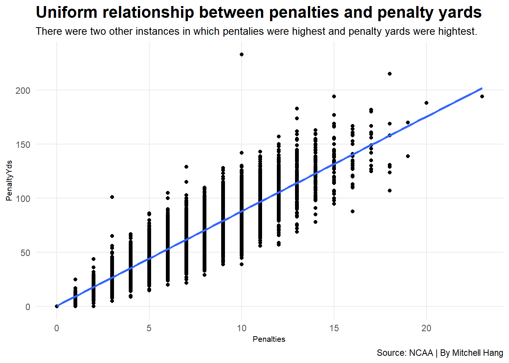
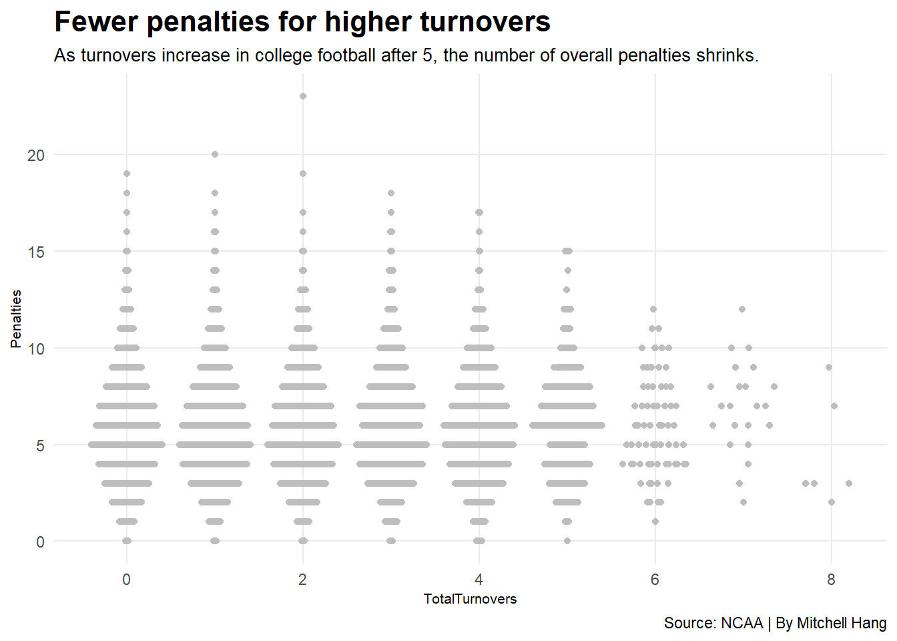

The question(s) I am aiming to tackle for this second presentation is: “Is there a relationship between penalties and wins/losses, and what kinds of penalties can do more harm than good?
Code
library(tidyverse)
Warning: package 'tidyverse' was built under R version 4.2.3
Warning: package 'ggplot2' was built under R version 4.2.3
Warning: package 'tibble' was built under R version 4.2.3
Warning: package 'readr' was built under R version 4.2.3
Warning: package 'purrr' was built under R version 4.2.3
Warning: package 'dplyr' was built under R version 4.2.3
Warning: package 'lubridate' was built under R version 4.2.3
── Attaching core tidyverse packages ──────────────────────── tidyverse 2.0.0 ──
✔ dplyr 1.1.2 ✔ readr 2.1.4
✔ forcats 1.0.0 ✔ stringr 1.5.0
✔ ggplot2 3.4.3 ✔ tibble 3.2.1
✔ lubridate 1.9.2 ✔ tidyr 1.3.0
✔ purrr 1.0.2
── Conflicts ────────────────────────────────────────── tidyverse_conflicts() ──
✖ dplyr::filter() masks stats::filter()
✖ dplyr::lag() masks stats::lag()
ℹ Use the conflicted package (<http://conflicted.r-lib.org/>) to force all conflicts to become errors
Code
library(ggbeeswarm)
Warning: package 'ggbeeswarm' was built under R version 4.2.3
Code
library(ggrepel)
Warning: package 'ggrepel' was built under R version 4.2.3
Rows: 1583 Columns: 54
── Column specification ────────────────────────────────────────────────────────
Delimiter: ","
chr (8): HomeAway, Opponent, Result, TeamFull, TeamURL, Outcome, Team, Con...
dbl (45): Game, PassingCmp, PassingAtt, PassingPct, PassingYds, PassingTD, ...
date (1): Date
ℹ Use `spec()` to retrieve the full column specification for this data.
ℹ Specify the column types or set `show_col_types = FALSE` to quiet this message.
Rows: 1628 Columns: 54
── Column specification ────────────────────────────────────────────────────────
Delimiter: ","
chr (8): HomeAway, Opponent, Result, TeamFull, TeamURL, Outcome, Team, Con...
dbl (45): Game, PassingCmp, PassingAtt, PassingPct, PassingYds, PassingTD, ...
date (1): Date
ℹ Use `spec()` to retrieve the full column specification for this data.
ℹ Specify the column types or set `show_col_types = FALSE` to quiet this message.
Rows: 1635 Columns: 54
── Column specification ────────────────────────────────────────────────────────
Delimiter: ","
chr (8): HomeAway, Opponent, Result, TeamFull, TeamURL, Outcome, Team, Con...
dbl (45): Game, PassingCmp, PassingAtt, PassingPct, PassingYds, PassingTD, ...
date (1): Date
ℹ Use `spec()` to retrieve the full column specification for this data.
ℹ Specify the column types or set `show_col_types = FALSE` to quiet this message.
Rows: 1633 Columns: 54
── Column specification ────────────────────────────────────────────────────────
Delimiter: ","
chr (8): HomeAway, Opponent, Result, TeamFull, TeamURL, Outcome, Team, Con...
dbl (45): Game, PassingCmp, PassingAtt, PassingPct, PassingYds, PassingTD, ...
date (1): Date
ℹ Use `spec()` to retrieve the full column specification for this data.
ℹ Specify the column types or set `show_col_types = FALSE` to quiet this message.
Rows: 1650 Columns: 54
── Column specification ────────────────────────────────────────────────────────
Delimiter: ","
chr (8): HomeAway, Opponent, Result, TeamFull, TeamURL, Outcome, Team, Con...
dbl (45): Game, PassingCmp, PassingAtt, PassingPct, PassingYds, PassingTD, ...
date (1): Date
ℹ Use `spec()` to retrieve the full column specification for this data.
ℹ Specify the column types or set `show_col_types = FALSE` to quiet this message.
Rows: 1656 Columns: 54
── Column specification ────────────────────────────────────────────────────────
Delimiter: ","
chr (8): HomeAway, Opponent, Result, TeamFull, TeamURL, Outcome, Team, Con...
dbl (45): Game, PassingCmp, PassingAtt, PassingPct, PassingYds, PassingTD, ...
date (1): Date
ℹ Use `spec()` to retrieve the full column specification for this data.
ℹ Specify the column types or set `show_col_types = FALSE` to quiet this message.
Rows: 1662 Columns: 54
── Column specification ────────────────────────────────────────────────────────
Delimiter: ","
chr (8): HomeAway, Opponent, Result, TeamFull, TeamURL, Outcome, Team, Con...
dbl (45): Game, PassingCmp, PassingAtt, PassingPct, PassingYds, PassingTD, ...
date (1): Date
ℹ Use `spec()` to retrieve the full column specification for this data.
ℹ Specify the column types or set `show_col_types = FALSE` to quiet this message.
Rows: 1100 Columns: 54
── Column specification ────────────────────────────────────────────────────────
Delimiter: ","
chr (8): HomeAway, Opponent, Result, TeamFull, TeamURL, Outcome, Team, Con...
dbl (45): Game, PassingCmp, PassingAtt, PassingPct, PassingYds, PassingTD, ...
date (1): Date
ℹ Use `spec()` to retrieve the full column specification for this data.
ℹ Specify the column types or set `show_col_types = FALSE` to quiet this message.
Rows: 1655 Columns: 54
── Column specification ────────────────────────────────────────────────────────
Delimiter: ","
chr (8): HomeAway, Opponent, Result, TeamFull, TeamURL, Outcome, Team, Con...
dbl (45): Game, PassingCmp, PassingAtt, PassingPct, PassingYds, PassingTD, ...
date (1): Date
ℹ Use `spec()` to retrieve the full column specification for this data.
ℹ Specify the column types or set `show_col_types = FALSE` to quiet this message.
Rows: 1672 Columns: 54
── Column specification ────────────────────────────────────────────────────────
Delimiter: ","
chr (8): HomeAway, Opponent, Result, TeamFull, TeamURL, Outcome, Team, Con...
dbl (45): Game, PassingCmp, PassingAtt, PassingPct, PassingYds, PassingTD, ...
date (1): Date
ℹ Use `spec()` to retrieve the full column specification for this data.
ℹ Specify the column types or set `show_col_types = FALSE` to quiet this message.
Rows: 1596 Columns: 54
── Column specification ────────────────────────────────────────────────────────
Delimiter: ","
chr (8): HomeAway, Opponent, Result, TeamFull, TeamURL, Outcome, Team, Con...
dbl (45): Game, PassingCmp, PassingAtt, PassingPct, PassingYds, PassingTD, ...
date (1): Date
ℹ Use `spec()` to retrieve the full column specification for this data.
ℹ Specify the column types or set `show_col_types = FALSE` to quiet this message.
I was able to load my datasets from 2019 to 2023, as 2019 was the earliest I could go since anything before that would give me an error (i.e., the data doesn’t exist). From there, I was able to mutate each dataset to add a column indicating which season it was for (e.g., 2019-2020, 2020-2021, etc.) before full_joining them one by one.
What I’m considering doing next is separating the result column by the outcome (W/L) and the final score (and maybe separate that into their own separate columns), which I assume should be relatively easy. I am also considering grouping the games by team and/or season to see how many penalties, fumbles, and interceptions they accumulated, and compare each one of them with the likelihood of them winning. In addition, I’ll have to look into whether the offense or defense accumulates more penalties in a game, based off checking the play-by-play data. These are just preliminary, as my final findings/concepts may change later on in this project.
One concern that I have is not having datasets prior to 2019 being available. Is there a logistical reason behind this? How would tracking down other datasets be like? Would they be much easier to merge/join?
===== Update (12/3) =====
So far, I haven’t had much time to work on this project over the past few days (long story short, poor time management and overall unsureness), but I am considering constructing a model (or two) that focuses on the Z-scores of a team based on their predicted likelihood of winning off their penalties, fumbles and interceptions. I still have yet to find/access any datasets prior to 2019, so I’m hoping to be able to construct something out of datasets going as far back as 2013 (i.e., the last ten seasons), to see how certain teams have improved over the last decade.
===== Update (12/10) =====
Code
football_logs_2013_to_2023
# A tibble: 17,470 × 55
Season Game Date HomeAway Opponent Result PassingCmp PassingAtt
<chr> <dbl> <date> <chr> <chr> <chr> <dbl> <dbl>
1 2013-2014 1 2013-09-07 <NA> San Jose St… W (34… 17 27
2 2013-2014 2 2013-09-14 @ Army W (34… 13 22
3 2013-2014 3 2013-09-21 <NA> Arizona Sta… W (42… 11 17
4 2013-2014 4 2013-09-28 N Washington … W (55… 17 28
5 2013-2014 5 2013-10-05 <NA> Washington W (31… 12 20
6 2013-2014 6 2013-10-12 @ Utah L (21… 15 27
7 2013-2014 7 2013-10-19 <NA> UCLA W (24… 18 25
8 2013-2014 8 2013-10-26 @ Oregon State W (20… 8 18
9 2013-2014 9 2013-11-07 <NA> Oregon W (26… 7 13
10 2013-2014 10 2013-11-16 @ Southern Ca… L (17… 14 25
# ℹ 17,460 more rows
# ℹ 47 more variables: PassingPct <dbl>, PassingYds <dbl>, PassingTD <dbl>,
# RushingAtt <dbl>, RushingYds <dbl>, RushingAvg <dbl>, RushingTD <dbl>,
# OffensivePlays <dbl>, OffensiveYards <dbl>, OffenseAvg <dbl>,
# FirstDownPass <dbl>, FirstDownRush <dbl>, FirstDownPen <dbl>,
# FirstDownTotal <dbl>, Penalties <dbl>, PenaltyYds <dbl>, Fumbles <dbl>,
# Interceptions <dbl>, TotalTurnovers <dbl>, TeamFull <chr>, TeamURL <chr>, …
`summarise()` has grouped output by 'Season', 'Conference'. You can override
using the `.groups` argument.
Code
football_Zscore <- football_totals |>mutate(PenaltiesZscore =as.numeric(scale(PenaltiesAvg, center =TRUE, scale =TRUE)),FumblesZscore =as.numeric(scale(FumblesAvg, center =TRUE, scale =TRUE)),InterceptionsZscore =as.numeric(scale(InterceptionsAvg, center =TRUE, scale =TRUE)),TotalTurnoversZscore =as.numeric(scale(TotalTurnoversAvg, center =TRUE, scale =TRUE)),DefPenaltiesZscore =as.numeric(scale(DefPenaltiesAvg, center =TRUE, scale =TRUE)) *-1,DefFumblesZscore =as.numeric(scale(DefFumblesAvg, center =TRUE, scale =TRUE)) *-1,DefInterceptionsZscore =as.numeric(scale(DefInterceptionsAvg, center =TRUE, scale =TRUE)) *-1,DefTotalTurnoversZscore =as.numeric(scale(DefTotalTurnoversAvg, center =TRUE, scale =TRUE)) *-1,TotalZscore = PenaltiesZscore + FumblesZscore + InterceptionsZscore + TotalTurnoversZscore + DefPenaltiesZscore + DefFumblesZscore + DefInterceptionsZscore + DefTotalTurnoversZscore ) football_Zscore |>arrange(Team, desc(TotalZscore))
# A tibble: 1,420 × 20
# Groups: Season, Conference [121]
Season Conference Team PenaltiesAvg FumblesAvg InterceptionsAvg
<chr> <chr> <chr> <dbl> <dbl> <dbl>
1 2017-2018 Mountain West Confe… Air … 4 1.17 0.5
2 2023-2024 Mountain West Confe… Air … 3.25 0.917 0.5
3 2013-2014 Mountain West Confe… Air … 4.42 0.75 0.333
4 2015-2016 Mountain West Confe… Air … 3.79 0.786 0.857
5 2018-2019 Mountain West Confe… Air … 4.5 0.833 0.417
6 2019-2020 Mountain West Confe… Air … 3.23 0.923 0.462
7 2020-2021 Mountain West Confe… Air … 4.5 0.833 0.5
8 2022-2023 Mountain West Confe… Air … 3.92 0.846 0.154
9 2014-2015 Mountain West Confe… Air … 3.54 1 0.308
10 2016-2017 Mountain West Confe… Air … 5.15 0.692 0.615
# ℹ 1,410 more rows
# ℹ 14 more variables: TotalTurnoversAvg <dbl>, DefPenaltiesAvg <dbl>,
# DefFumblesAvg <dbl>, DefInterceptionsAvg <dbl>, DefTotalTurnoversAvg <dbl>,
# PenaltiesZscore <dbl>, FumblesZscore <dbl>, InterceptionsZscore <dbl>,
# TotalTurnoversZscore <dbl>, DefPenaltiesZscore <dbl>,
# DefFumblesZscore <dbl>, DefInterceptionsZscore <dbl>,
# DefTotalTurnoversZscore <dbl>, TotalZscore <dbl>
Code
football_Zscore |>arrange(desc(TotalZscore))
# A tibble: 1,420 × 20
# Groups: Season, Conference [121]
Season Conference Team PenaltiesAvg FumblesAvg InterceptionsAvg
<chr> <chr> <chr> <dbl> <dbl> <dbl>
1 2017-2018 Conference USA Rice 4.42 1.08 1.33
2 2022-2023 Big Ten Conference Nort… 4.58 1.17 1.42
3 2016-2017 Conference USA Sout… 7.46 1.23 1.23
4 2019-2020 Mid-American Confer… Akron 6.67 1 1.17
5 2021-2022 Pac-12 Conference Ariz… 8.67 0.417 1.5
6 2013-2014 Big Ten Conference Nebr… 5.92 1.23 1
7 2019-2020 Big Ten Conference Rutg… 6.33 0.667 1.25
8 2020-2021 Big Ten Conference Mary… 8.8 0.4 1.8
9 2018-2019 Atlantic Coast Conf… Flor… 9.17 1.08 1.08
10 2015-2016 American Athletic C… Cinc… 8 0.846 1.69
# ℹ 1,410 more rows
# ℹ 14 more variables: TotalTurnoversAvg <dbl>, DefPenaltiesAvg <dbl>,
# DefFumblesAvg <dbl>, DefInterceptionsAvg <dbl>, DefTotalTurnoversAvg <dbl>,
# PenaltiesZscore <dbl>, FumblesZscore <dbl>, InterceptionsZscore <dbl>,
# TotalTurnoversZscore <dbl>, DefPenaltiesZscore <dbl>,
# DefFumblesZscore <dbl>, DefInterceptionsZscore <dbl>,
# DefTotalTurnoversZscore <dbl>, TotalZscore <dbl>
Here, we can see that Rice was known most for its penalties, fumbles, interceptions and total turnovers they accumulated during the 2017-2018 college football season. Maryland had a greater chance of accumulating them during the 2020-2021 season. On the other hand, it seems that the opponents of Boston College racked up more penalties, fumbles, interceptions and total turnovers during the 2018-2019 college football season. The two teams who were known for their middling (i.e., average) penalty, fumble, interception and total turnover rates are Marshall during the 2019-2020 season and West Virginia during the 2013-2014 season.
Maryland’s highest chance of having racked up penalties, fumbles, interceptions and total turnovers was in its 2020-2021 season (with it being similar to Florida State during the 2018-2019 season), and their lowest chance having been in their 2018-2019 season, so it’s interesting to find a strong shift over a few years. However, these results only seem to certify teams throughout each season from 2013 to 2023, rather than a look at their cumulative games.
Here, we can see that Bowling Green State was most known for having racked up penalties, fumbles, interceptions and total turnovers from the 2013 to the 2023 seasons, whereas Oregon was less known as such. Teams like Wisconsin and Ole Miss were known to have had middling (i.e., average) amounts of penalties, fumbles, interceptions and total turnovers throughout this time. I would assume there is some strategy for Oregon to avoid racking up more of these turnovers, as coaches such as Mario Cristobal and Dan Lanning have seemingly contributed to the teams’ overall performance for several years. Meanwhile, Bowling Green State coach Scot Loeffler apparently doesn’t have a strategy worked out for his team to avoid racking more total turnovers.
Code
ggplot() +geom_point(data=football_logs_2013_to_2023, aes(x=Penalties, y=PenaltyYds)) +geom_smooth(data=football_logs_2013_to_2023, aes(x=Penalties, y=PenaltyYds), method="lm") +theme_minimal() +labs(title="Uniform relationship between penalties and penalty yards", subtitle="There were two other instances in which pentalies were highest and penalty yards were hightest.", caption="Source: NCAA | By Mitchell Hang") +theme_minimal() +theme(plot.title =element_text(size =16, face ="bold"),axis.title =element_text(size =8), plot.subtitle =element_text(size=10), panel.grid.minor =element_blank() )
`geom_smooth()` using formula = 'y ~ x'

Code
fit <-lm(PenaltyYds ~ Penalties, data = football_logs_2013_to_2023)summary(fit)
Call:
lm(formula = PenaltyYds ~ Penalties, data = football_logs_2013_to_2023)
Residuals:
Min 1Q Median 3Q Max
-52.548 -7.095 -0.575 6.932 144.932
Coefficients:
Estimate Std. Error t value Pr(>|t|)
(Intercept) 0.6018 0.2088 2.882 0.00395 **
Penalties 8.7466 0.0315 277.694 < 2e-16 ***
---
Signif. codes: 0 '***' 0.001 '**' 0.01 '*' 0.05 '.' 0.1 ' ' 1
Residual standard error: 11.77 on 17468 degrees of freedom
Multiple R-squared: 0.8153, Adjusted R-squared: 0.8153
F-statistic: 7.711e+04 on 1 and 17468 DF, p-value: < 2.2e-16
Here, we can see the relationship between penalties and penalty yards is almost entirely uniform and most cerainly not due to chance. According to the complete logs from the 2013 to the 2023 seasons, the most penalty yards ever accumulated during a college football game was by Arkansas State Red Wolves in a match against the Western Kentucky Hilltoppers on November 30, 2013 (the Wolves lost 31-34), but only ten penalties had been accumulated. The most number of penalties ever accumulated was by the Miami (FL) Hurricanes in a match against the Duke Blue Devils on October 31, 2015 (the Hurricanes won 30-27). 194 penalty yards were accumulated by the Hurricanes during that game, and that amount is still relatively high.
Code
ggplot() +geom_quasirandom(data=football_logs_2013_to_2023, aes(x=TotalTurnovers, y=Penalties), color="grey") +theme_minimal() +labs(title="Fewer penalties for higher turnovers", subtitle="As turnovers increase in college football after 5, the number of overall penalties shrinks.", caption="Source: NCAA | By Mitchell Hang") +theme_minimal() +theme(plot.title =element_text(size =16, face ="bold"),axis.title =element_text(size =8), plot.subtitle =element_text(size=10), panel.grid.minor =element_blank() )

Code
fit <-lm(TotalTurnovers ~ Penalties, data = football_logs_2013_to_2023)summary(fit)
Call:
lm(formula = TotalTurnovers ~ Penalties, data = football_logs_2013_to_2023)
Residuals:
Min 1Q Median 3Q Max
-1.5927 -0.5365 -0.4874 0.5126 6.5267
Coefficients:
Estimate Std. Error t value Pr(>|t|)
(Intercept) 1.459285 0.022546 64.724 <2e-16 ***
Penalties 0.007020 0.003401 2.064 0.039 *
---
Signif. codes: 0 '***' 0.001 '**' 0.01 '*' 0.05 '.' 0.1 ' ' 1
Residual standard error: 1.271 on 17468 degrees of freedom
Multiple R-squared: 0.0002438, Adjusted R-squared: 0.0001866
F-statistic: 4.26 on 1 and 17468 DF, p-value: 0.03903
From what this graph shows, the highest number of penalties occurred with just two total turnovers for a team. The distribution for penalties to total turnovers seems to be relatively even from 0 to 5 turnovers. There were fewer instances for a team to have gotten more penalties with starting with 6 turnovers, with the least occurring at 8 turnovers. Upon closer examination, this occurrence seems to be slightly less random than one might think, so there could be some strategy involved in which teams focus on racking up more turnovers to reduce the number of penalties inflicted upon them.
===== Conclusion =====
After loading and analyzing all of the college football data from 2013 to 2023, I found that it was somewhat difficult to come to a concrete conclusion as to whether or not penalties, fumbles, interceptions and overall total turnoves do matter to a team’s advantage due to the limited amount of time I had working on this project. One thing that could’ve been easier is if there was a complete datasheet for football logs from the 2013 to the 2023 seasons, rather than having each individual ones, so that everything would load quicker without additional merging/joining. However, from my initial results, I can conclude that the relationship between penalties and penalty yards accumulated is relatively uniform, and that Bowling Green State was known to have racked up more overall turnovers from the 2013 to the 2023 seasons.